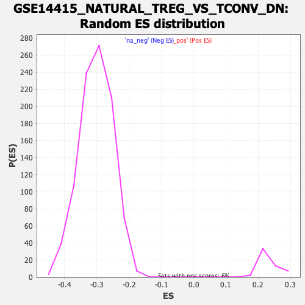

| | | Dataset | DE_genes2 |
| Phenotype | NoPhenotypeAvailable |
| Upregulated in class | na_neg |
| GeneSet | GSE14415_NATURAL_TREG_VS_TCONV_DN |
| Enrichment Score (ES) | -0.7304063 |
| Normalized Enrichment Score (NES) | -2.416801 |
| Nominal p-value | 0.0 |
| FDR q-value | 0.0 |
| FWER p-Value | 0.0 |
Table: GSEA Results Summary
 Fig 1: Enrichment plot: GSE14415_NATURAL_TREG_VS_TCONV_DN
Fig 1: Enrichment plot: GSE14415_NATURAL_TREG_VS_TCONV_DN
Profile of the Running ES Score & Positions of GeneSet Members on the Rank Ordered List
| PROBE | GENE SYMBOL | GENE_TITLE | RANK IN GENE LIST | RANK METRIC SCORE | RUNNING ES | CORE ENRICHMENT | | 1 | MX2 | | | 162 | 5.325 | -0.0018 | No |
| 2 | MTCH1 | | | 755 | 3.110 | -0.0332 | No |
| 3 | ZBP1 | | | 928 | 2.830 | -0.0394 | No |
| 4 | CTSC | | | 1504 | 2.173 | -0.0712 | No |
| 5 | ACTB | | | 1599 | 2.090 | -0.0737 | No |
| 6 | ABR | | | 1741 | 1.958 | -0.0793 | No |
| 7 | MRPL34 | | | 1755 | 1.948 | -0.0772 | No |
| 8 | GNAI2 | | | 1973 | 1.775 | -0.0877 | No |
| 9 | NCKIPSD | | | 2025 | 1.739 | -0.0882 | No |
| 10 | GZMA | | | 2095 | 1.687 | -0.0898 | No |
| 11 | MSN | | | 2117 | 1.670 | -0.0885 | No |
| 12 | NRTN | | | 2485 | 1.450 | -0.1087 | No |
| 13 | KDM4A | | | 2585 | 1.397 | -0.1127 | No |
| 14 | SLC41A3 | | | 2646 | 1.364 | -0.1142 | No |
| 15 | PYCARD | | | 2656 | 1.361 | -0.1127 | No |
| 16 | CTSD | | | 2961 | 1.212 | -0.1294 | No |
| 17 | TEAD3 | | | 3289 | 1.078 | -0.1478 | No |
| 18 | PDLIM4 | | | 3542 | 0.992 | -0.1616 | No |
| 19 | HOXB2 | | | 3566 | 0.983 | -0.1615 | No |
| 20 | ITGAM | | | 3608 | 0.967 | -0.1626 | No |
| 21 | DHCR24 | | | 3658 | 0.947 | -0.1641 | No |
| 22 | DISP2 | | | 3965 | 0.847 | -0.1815 | No |
| 23 | EHBP1L1 | | | 4167 | 0.789 | -0.1926 | No |
| 24 | OSBPL3 | | | 4232 | 0.767 | -0.1953 | No |
| 25 | FIBCD1 | | | 4363 | 0.732 | -0.2022 | No |
| 26 | ABRACL | | | 4535 | 0.682 | -0.2116 | No |
| 27 | AGFG2 | | | 4591 | 0.663 | -0.2139 | No |
| 28 | SCAF1 | | | 4625 | 0.656 | -0.2149 | No |
| 29 | FAM117A | | | 4636 | 0.654 | -0.2145 | No |
| 30 | SYCE2 | | | 5414 | 0.467 | -0.2613 | No |
| 31 | PMF1 | | | 5580 | 0.431 | -0.2707 | No |
| 32 | CORO2A | | | 5668 | 0.411 | -0.2754 | No |
| 33 | PALM | | | 5710 | 0.402 | -0.2773 | No |
| 34 | PROSER2 | | | 5839 | 0.378 | -0.2845 | No |
| 35 | ROM1 | | | 5910 | 0.363 | -0.2882 | No |
| 36 | NSMF | | | 6105 | 0.324 | -0.2996 | No |
| 37 | VIM | | | 6648 | 0.215 | -0.3324 | No |
| 38 | LSP1 | | | 6682 | 0.207 | -0.3341 | No |
| 39 | FKBP2 | | | 6778 | 0.189 | -0.3396 | No |
| 40 | XRRA1 | | | 6953 | 0.163 | -0.3500 | No |
| 41 | CNIH2 | | | 6990 | 0.157 | -0.3519 | No |
| 42 | STMN1 | | | 7057 | 0.145 | -0.3558 | No |
| 43 | SLC43A3 | | | 7433 | 0.076 | -0.3785 | No |
| 44 | HCLS1 | | | 7454 | 0.073 | -0.3797 | No |
| 45 | USP46 | | | 8366 | -0.068 | -0.4352 | No |
| 46 | MAPK1 | | | 9065 | -0.206 | -0.4775 | No |
| 47 | ATP2A2 | | | 9170 | -0.231 | -0.4835 | No |
| 48 | ASXL1 | | | 9217 | -0.245 | -0.4860 | No |
| 49 | HNRNPUL1 | | | 10092 | -0.489 | -0.5386 | No |
| 50 | LAMC1 | | | 10420 | -0.592 | -0.5577 | No |
| 51 | ZBTB32 | | | 10550 | -0.644 | -0.5646 | No |
| 52 | ANXA4 | | | 10666 | -0.682 | -0.5706 | No |
| 53 | CALU | | | 11017 | -0.808 | -0.5907 | No |
| 54 | PTMS | | | 11529 | -1.016 | -0.6204 | No |
| 55 | LIG1 | | | 12096 | -1.272 | -0.6530 | No |
| 56 | LIX1L | | | 12204 | -1.327 | -0.6575 | No |
| 57 | SPCS3 | | | 12525 | -1.488 | -0.6748 | No |
| 58 | E2F8 | | | 12689 | -1.584 | -0.6823 | No |
| 59 | CHAF1B | | | 12733 | -1.605 | -0.6825 | No |
| 60 | HNF4A | | | 12849 | -1.688 | -0.6869 | No |
| 61 | TRNP1 | | | 12994 | -1.765 | -0.6930 | No |
| 62 | RRM1 | | | 13038 | -1.791 | -0.6929 | No |
| 63 | CENPP | | | 13066 | -1.809 | -0.6918 | No |
| 64 | CENPM | | | 13147 | -1.858 | -0.6939 | No |
| 65 | CHTF18 | | | 13370 | -2.009 | -0.7044 | No |
| 66 | AUNIP | | | 13394 | -2.022 | -0.7027 | No |
| 67 | KCNK2 | | | 13661 | -2.205 | -0.7156 | No |
| 68 | ITGAX | | | 13770 | -2.300 | -0.7187 | No |
| 69 | MCM3 | | | 13783 | -2.315 | -0.7158 | No |
| 70 | NCAPD2 | | | 13788 | -2.321 | -0.7125 | No |
| 71 | MCM5 | | | 13861 | -2.378 | -0.7133 | No |
| 72 | CKS1B | | | 13865 | -2.382 | -0.7099 | No |
| 73 | MCM7 | | | 13952 | -2.457 | -0.7114 | No |
| 74 | HIP1 | | | 13991 | -2.489 | -0.7099 | No |
| 75 | ASF1B | | | 14048 | -2.550 | -0.7094 | No |
| 76 | IGF2BP3 | | | 14100 | -2.596 | -0.7086 | No |
| 77 | PTGR1 | | | 14304 | -2.785 | -0.7167 | No |
| 78 | RNASEH2B | | | 14316 | -2.795 | -0.7131 | No |
| 79 | LRR1 | | | 14381 | -2.866 | -0.7126 | No |
| 80 | DUT | | | 14433 | -2.919 | -0.7113 | No |
| 81 | USP3 | | | 14541 | -3.039 | -0.7132 | No |
| 82 | MYBL1 | | | 14708 | -3.250 | -0.7184 | No |
| 83 | MCM4 | | | 14906 | -3.510 | -0.7250 | Yes |
| 84 | CDCA3 | | | 14921 | -3.539 | -0.7205 | Yes |
| 85 | RAD51C | | | 14925 | -3.543 | -0.7153 | Yes |
| 86 | MCM2 | | | 15006 | -3.658 | -0.7146 | Yes |
| 87 | TACC3 | | | 15038 | -3.698 | -0.7108 | Yes |
| 88 | SPC24 | | | 15084 | -3.765 | -0.7078 | Yes |
| 89 | CENPN | | | 15099 | -3.785 | -0.7029 | Yes |
| 90 | CDCA8 | | | 15225 | -3.955 | -0.7045 | Yes |
| 91 | CDC25B | | | 15237 | -3.978 | -0.6991 | Yes |
| 92 | RAD51 | | | 15283 | -4.088 | -0.6956 | Yes |
| 93 | ANP32B | | | 15295 | -4.108 | -0.6900 | Yes |
| 94 | SPAG5 | | | 15339 | -4.181 | -0.6862 | Yes |
| 95 | TK1 | | | 15344 | -4.187 | -0.6801 | Yes |
| 96 | RAD54L | | | 15435 | -4.365 | -0.6789 | Yes |
| 97 | CBX5 | | | 15439 | -4.369 | -0.6724 | Yes |
| 98 | GINS1 | | | 15564 | -4.619 | -0.6729 | Yes |
| 99 | AURKA | | | 15607 | -4.737 | -0.6683 | Yes |
| 100 | PLK1 | | | 15623 | -4.763 | -0.6619 | Yes |
| 101 | CDC25C | | | 15648 | -4.802 | -0.6560 | Yes |
| 102 | UHRF1 | | | 15683 | -4.875 | -0.6507 | Yes |
| 103 | RRM2 | | | 15702 | -4.911 | -0.6443 | Yes |
| 104 | BLM | | | 15728 | -4.957 | -0.6382 | Yes |
| 105 | BIRC5 | | | 15741 | -4.998 | -0.6313 | Yes |
| 106 | MTR | | | 15763 | -5.037 | -0.6249 | Yes |
| 107 | TAF1D | | | 15772 | -5.057 | -0.6177 | Yes |
| 108 | CDK1 | | | 15810 | -5.156 | -0.6121 | Yes |
| 109 | CCNB2 | | | 15832 | -5.225 | -0.6054 | Yes |
| 110 | GSR | | | 15839 | -5.243 | -0.5977 | Yes |
| 111 | NCAPH | | | 15843 | -5.247 | -0.5899 | Yes |
| 112 | TPX2 | | | 15859 | -5.288 | -0.5828 | Yes |
| 113 | TOPBP1 | | | 15880 | -5.334 | -0.5758 | Yes |
| 114 | HELLS | | | 15936 | -5.474 | -0.5708 | Yes |
| 115 | CHEK1 | | | 15965 | -5.552 | -0.5641 | Yes |
| 116 | MAD2L1 | | | 16043 | -5.805 | -0.5599 | Yes |
| 117 | PRC1 | | | 16103 | -5.960 | -0.5544 | Yes |
| 118 | SKA3 | | | 16116 | -5.989 | -0.5460 | Yes |
| 119 | BUB1 | | | 16142 | -6.084 | -0.5382 | Yes |
| 120 | FBXO5 | | | 16169 | -6.210 | -0.5303 | Yes |
| 121 | PRR11 | | | 16177 | -6.259 | -0.5212 | Yes |
| 122 | LMNB1 | | | 16178 | -6.259 | -0.5116 | Yes |
| 123 | CENPH | | | 16211 | -6.387 | -0.5038 | Yes |
| 124 | KIF4A | | | 16226 | -6.459 | -0.4948 | Yes |
| 125 | MIS18BP1 | | | 16234 | -6.494 | -0.4853 | Yes |
| 126 | CDC45 | | | 16272 | -6.693 | -0.4774 | Yes |
| 127 | IQGAP3 | | | 16332 | -7.059 | -0.4702 | Yes |
| 128 | BUB1B | | | 16335 | -7.102 | -0.4595 | Yes |
| 129 | ESCO2 | | | 16342 | -7.133 | -0.4490 | Yes |
| 130 | KIF23 | | | 16347 | -7.203 | -0.4382 | Yes |
| 131 | HNRNPA3 | | | 16366 | -7.349 | -0.4281 | Yes |
| 132 | BRIP1 | | | 16369 | -7.368 | -0.4170 | Yes |
| 133 | CCNA2 | | | 16376 | -7.439 | -0.4060 | Yes |
| 134 | NUF2 | | | 16382 | -7.475 | -0.3948 | Yes |
| 135 | CLSPN | | | 16384 | -7.528 | -0.3834 | Yes |
| 136 | KIF11 | | | 16409 | -7.860 | -0.3729 | Yes |
| 137 | FKBP5 | | | 16412 | -7.889 | -0.3609 | Yes |
| 138 | BRCA1 | | | 16413 | -7.892 | -0.3489 | Yes |
| 139 | ABCF1 | | | 16423 | -7.992 | -0.3372 | Yes |
| 140 | ARF6 | | | 16426 | -8.026 | -0.3251 | Yes |
| 141 | NEIL3 | | | 16430 | -8.045 | -0.3130 | Yes |
| 142 | TTK | | | 16444 | -8.189 | -0.3013 | Yes |
| 143 | KIF15 | | | 16449 | -8.254 | -0.2889 | Yes |
| 144 | PBK | | | 16458 | -8.487 | -0.2765 | Yes |
| 145 | CDKN3 | | | 16463 | -8.532 | -0.2637 | Yes |
| 146 | SMC2 | | | 16464 | -8.568 | -0.2506 | Yes |
| 147 | ARHGAP11A | | | 16467 | -8.620 | -0.2375 | Yes |
| 148 | WDHD1 | | | 16469 | -8.658 | -0.2244 | Yes |
| 149 | DLGAP5 | | | 16482 | -9.145 | -0.2112 | Yes |
| 150 | CKAP2 | | | 16486 | -9.390 | -0.1970 | Yes |
| 151 | TOP2A | | | 16497 | -9.873 | -0.1825 | Yes |
| 152 | ARHGAP19 | | | 16500 | -9.994 | -0.1674 | Yes |
| 153 | CENPE | | | 16501 | -10.010 | -0.1521 | Yes |
| 154 | KIF14 | | | 16503 | -10.060 | -0.1368 | Yes |
| 155 | NCAPG | | | 16504 | -10.079 | -0.1214 | Yes |
| 156 | CENPF | | | 16507 | -10.688 | -0.1052 | Yes |
| 157 | CEP55 | | | 16508 | -10.710 | -0.0889 | Yes |
| 158 | ASPM | | | 16510 | -10.824 | -0.0724 | Yes |
| 159 | HMGB2 | | | 16525 | -11.801 | -0.0552 | Yes |
| 160 | CKAP2L | | | 16526 | -11.804 | -0.0372 | Yes |
| 161 | NDC80 | | | 16527 | -12.233 | -0.0185 | Yes |
| 162 | HMMR | | | 16528 | -12.240 | 0.0002 | Yes |
Table: GSEA details [plain text format]

Fig 2: GSE14415_NATURAL_TREG_VS_TCONV_DN: Random ES distribution
Gene set null distribution of ES for GSE14415_NATURAL_TREG_VS_TCONV_DN